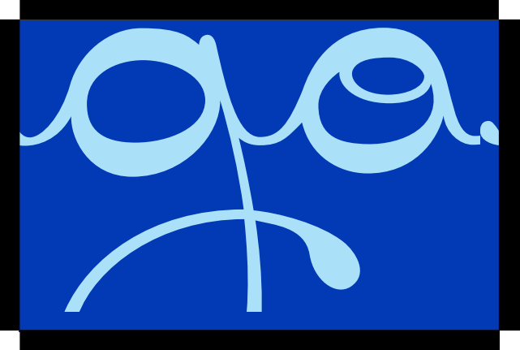
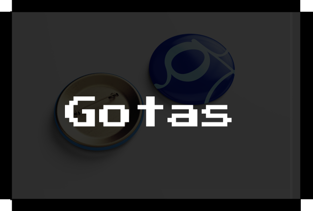
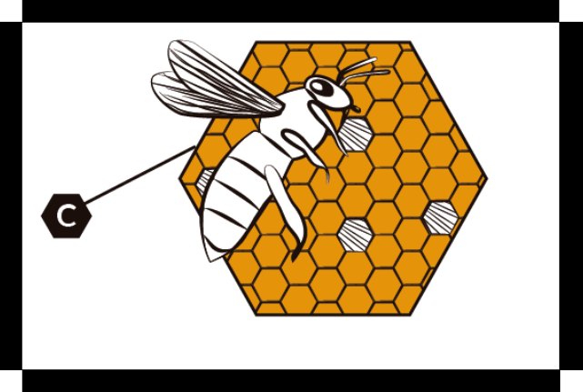
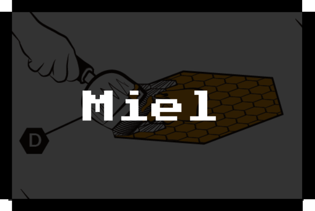
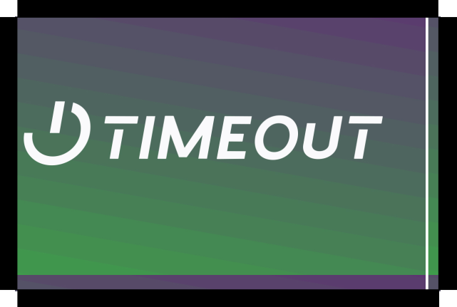
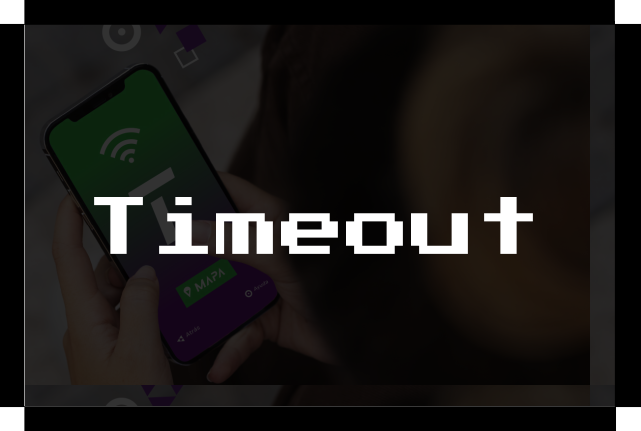

Trabajos de Diseño:



‘Gotas’, Año 2022. Trabajo Práctico de la facultad realizado para la materia Espacio Tipográfico 3.


‘Producción de la Miel’, Año 2022. Trabajo Práctico de la facultad realizado para la materia Espacio Tipográfico 3.


‘Timeout’, Año 2023. Trabajo Práctico de la facultad realizado para la materia Taller de Diseño 3.